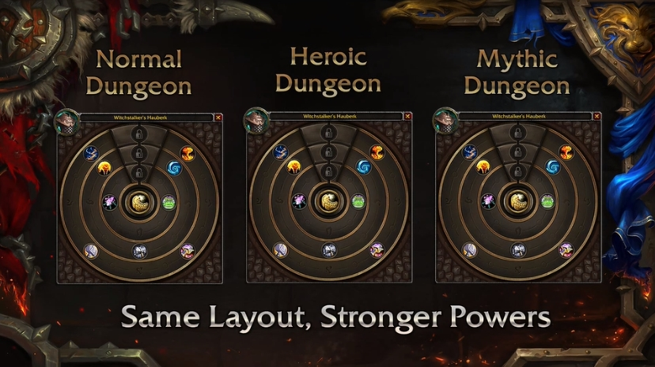

World of Warcraft: Battle for Azeroth
With the newest installment of the popular MMORPG, World of Warcraft, new adventures await with the addition of 2 new continents with 3 zones in each, journey to level 120, Island scenarios, and the addition of allied races. With what is supposedly a large upgrade from the current expansion, Legion, Battle for Azeroth may live up to the hype or fall flat depending on how Alpha testing goes.
Alpha: First Impressions
After looking through many sources that currently have Alpha since I do not (#NoAlphaClub), I have noticed that the current iteration of the game doesn't bring many features to be tested. With only 2 zones playable, one for each faction, and about half the abilities that are expected to ship with the game, it is hard to tell at this point whether or not class development is solid or whether or not 3 zones per faction is enough to sate the thirst for new content. So far the dungeons look fantastic and are pretty blatantly designed with Mythic+ in mind, which is good. With only a few additions to play test, the overall impression of the game this early is yet to be determined.

Image Credit - PCGamesN
Pros and Cons
Pros
- New Textures for Old World NPCs
- Allied Races
- Dungeons Designed for Mythic+
- Darker Story (At least for Drustvar and Nazmir)
- Intriguing Class Design
- Islands only grant Azerite as a reward, making it less interesting than the previous Artifact system
- Watered Down Artifact System
- Few Zones
- Very Few Big Features, More QoL and Updated Features if Anything
Comments